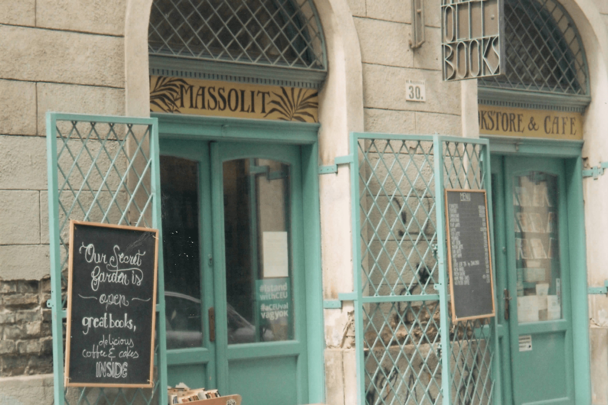
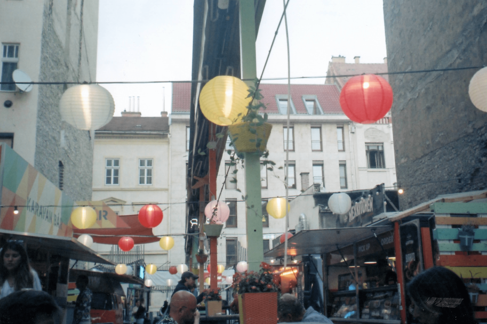

we only got to know each other for one weekend a few years ago, so we're not very well acquainted. but from what I got to see, you're a lovely city deserving of a more throughout visit.
memories range from eating lángos and drinking mango cooler cocktails at street food karavan (photo 4), accompanied by nasal “SWEET POTATO FRIES” screams from the kiosk lady, to showering in the middle of the hotel room. drinking beer on heroes’ square (photo 2) and observing tik tok dancers with martina and barbara. a ton of túró rudi bars and concerningly misspelled names on coffee cups. a tour of parliament, discovering cute backyard cafes (photo 3) and buying a bunch of illustrated postcards.
thank you, until we meet again!
egy perc van hátra (that’s all I can say in hungarian).
1

2
3
4